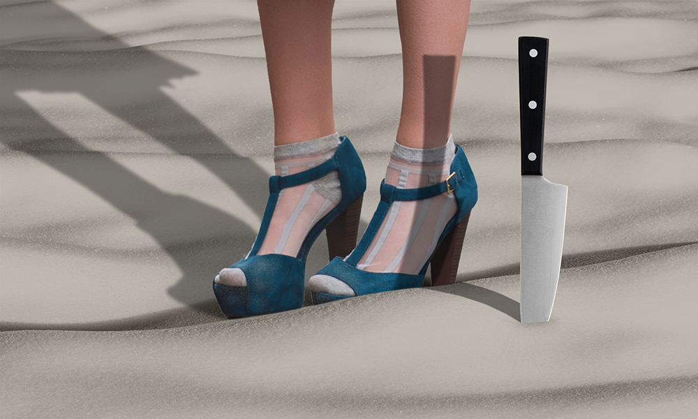

One of the great joys of speculative fiction is World Building. As a writer, it's creating new environments from, so to speak, the ground up; as a reader, it's setting off into each one to see what they contain. Subodhana Wijeyeratne has built a world already crumbling when we take our first steps. To know why, ask its creator — but with gods, don't expect to understand whatever answer is forthcoming.

We all get lost in the moment occasionally, or feel time is getting away from us. But how horrible could either be under the wrong circumstances? Or ANY circumstances, if you never knew which way it was going to be, or when? Like you just found out the countdown has begun, the clock is ticking, the last vital seconds slipping away…
Yes, it's hard to know what will get a story accepted or rejected at Mythaxis — but until recently the editor thought he had one answer at least: 'Don't send me any more clever retellings of ancient Greek Myths,' he'd say, 'I'm never going to take one of those!' And then Meg Candelaria came along to make him eat those words.

Mythaxis is not typically a home to poetry, nor to reprints, but when we came across this piece while hunting down the author of 'The Third Martian Dick Temple' we were immediately moved, in no small part due to the pandemic gripping the world in early 2020. One year on from the first Covid-19 lockdowns, the world remains profoundly changed from how it was before - but thankfully not this much changed.

Fashion models, they're like some other species, aren't they? Tall, sleek, beautiful — well, sometimes beautiful, sort of. "Striking", let's say. Or maybe they're more like aliens, so different from we mere humans as they glide by, adorned in strange new things. Well, while you're contemplating next season's rags, just be careful the fascinating lure of the catwalk doesn't distract you from the strange new thing sitting right there next to you.

There's a certain theme in science fiction and fantasy that's always been popular - hard to set this up without spoiling it! Hollywood movies have repeatedly run with it (usually for laughs), so too surely every TV show in either genre. It has clear horror potential too, but very rarely are such stories approached from the outsider's point-of-view. KC Grifant does so here, and with a similarly atypical air of loss, rather than gain.
What makes a person who they are: Nature or Nurture? Most people would say it's a bit of both, forgetting that musician they like with "natural talent", or the monster on the news who was just "born evil". But of course, those are the outliers. For most of us, how and where we're raised makes all the difference. And what about when you learn you're not what you think you are at all — is it Nature or Nurture then?
Pritesh Patil and Percy Wadiwala
There's a long tradition of comedy double acts, both in writing and performing. It's always good to have someone to bounce your ideas off, as long as they don't become someone you want to bounce off the wall. Pritesh Patil and Percy Wadiwala provide a fine example of the benefits of the former, but the calamitous duo at the heart of their story may be more like the latter…